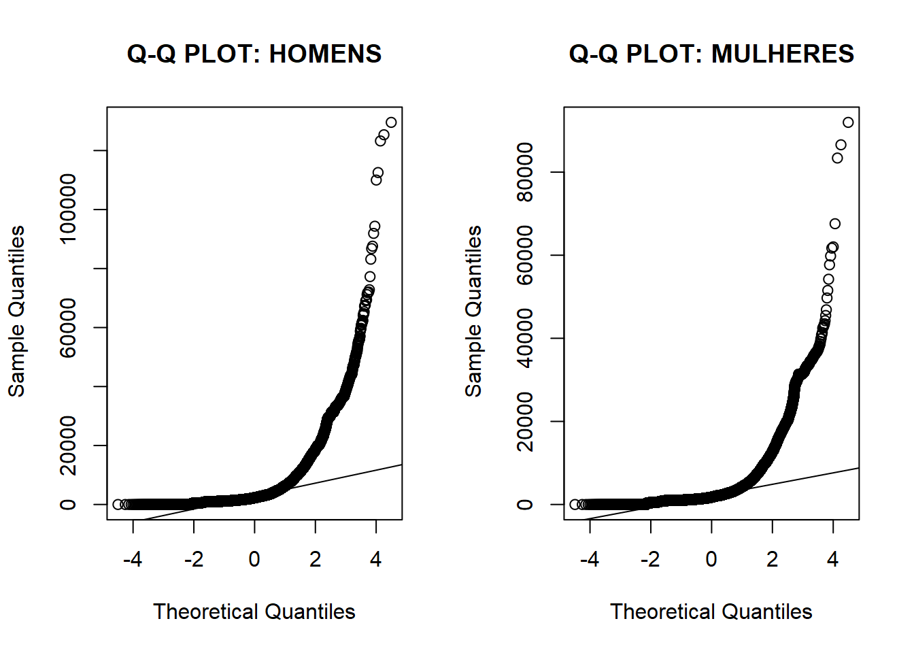
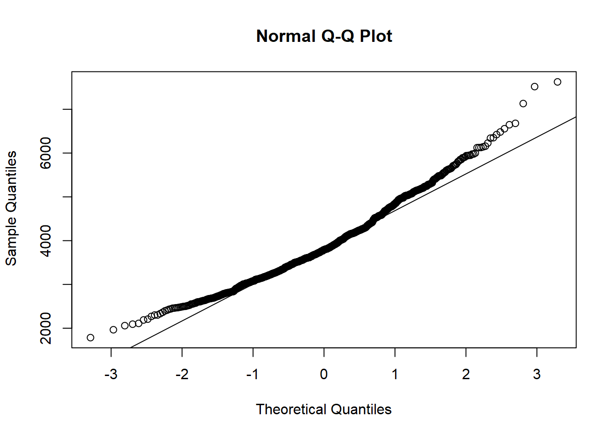
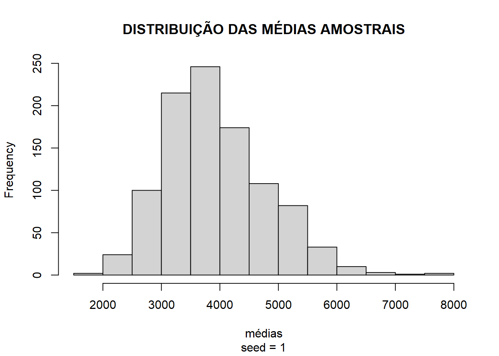
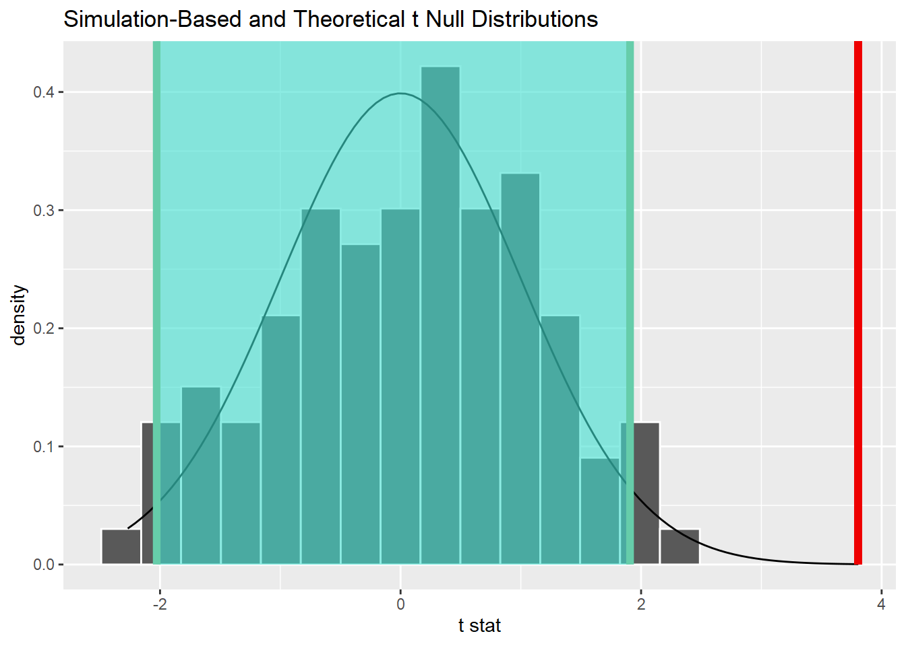
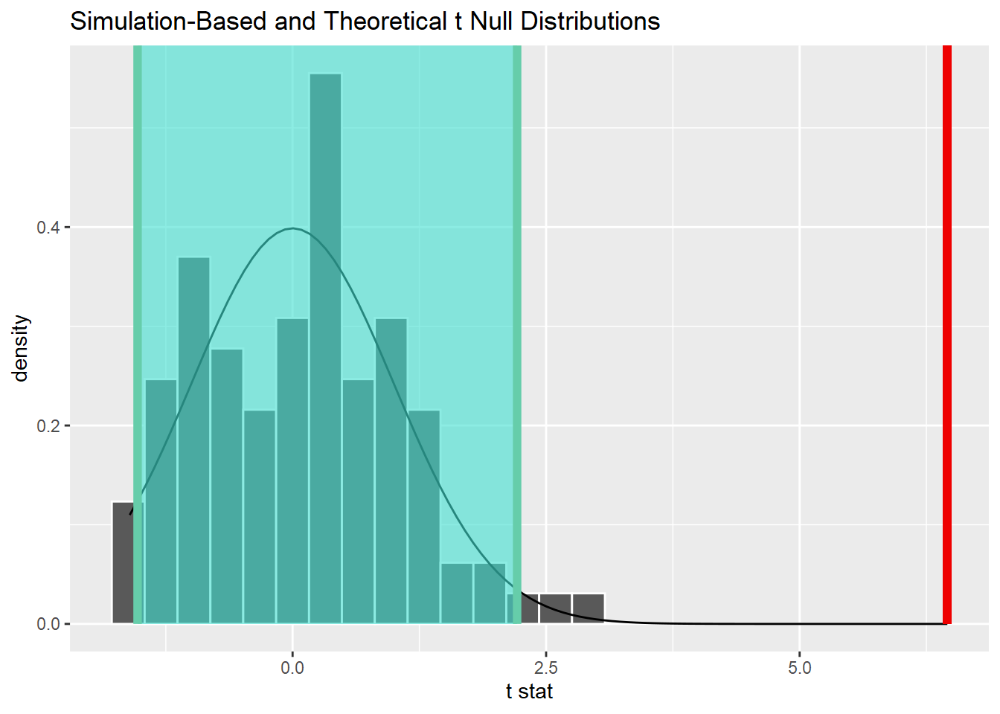

Ainda há um bocado de coisas para cobrir nessa série de “inferência 101” e para continuar os estudos trouxe a base da RAIS (Relação Anual de Informações Sociais) de 2017. Com ela, vamos introduzir o conceito de effect size e de quebra analisar a desigualdade de gênero em nossa querida capital Vitória.
OS DADOS
Coloco aqui duas opções para buscar esses dados:
- Manualmente, navegando em ftp://ftp.mtps.gov.br/pdet/microdados/RAIS/2017/ES2017.7z
- De forma programática via Python.
Escolhi o Python aqui porque não conheço um pacote no CRAN que lide com compressão 7zip — se souber, por favor, indique nos comentários! Se escolher baixar e descompactar via script, podemos executar códigos Python através do R com o {reticulate}:
# ativando python
library(reticulate)
# escolhendo o ambiente
use_condaenv("base")
Depois de ativar o ambiente Python, vamos baixar e descompactar a base de dados para uma pasta chamada data dentro do diretório do nosso projeto. Se você baixou manualmente, crie a pasta data e cole o arquivo lá.
# importando módulos
import urllib.request as rq
import py7zr
# baixando dados
url = "ftp://ftp.mtps.gov.br/pdet/microdados/RAIS/2017/ES2017.7z"
rq.urlretrieve(url, "data/rais.7z")
# descompactando
rais = py7zr.SevenZipFile('data/rais.7z', mode='r')
rais.extractall(path="data/")
rais.close()
Vamos precisar também da tabela do Código Brasileiro de Ocupações para entendermos as profissões das pessoas analisadas. Depois de fazer o download, coloque na pasta data junto com o arquivo da Rais.
Com os dados baixados, vamos importá-los, conhecê-los e começar a extrair sentido deles.
# pacotes
library(tidyverse)
# importando a Rais
# como os dados possuem caracteres especiais (acentos),
# é necessário alterar o encoding para LATIN1
data = read_delim("data/ES2017.txt", delim = ";",
locale = readr::locale(encoding = "LATIN1"),
col_names = FALSE,
skip = 1)
# escolhendo as variáveis de interesse e renomeando colunas
# também vamos precisar substituir vírgulas por pontos
# se preferir, realize essa etapa via encoding
data = data %>%
select(X8, X20, X26, X31, X35, X38) %>%
rename("cod_profissao" = X8,
"idade" = X20,
"municipio" = X26,
"cod_raca" = X31,
"rem_media" = X35,
"sexo" = X38) %>%
mutate(rem_media = as.numeric(str_replace_all(rem_media, ",", ".")),
sexo = as.integer(sexo),
idade = as.integer(idade))
# importando tabela CBO
cbo = read_delim("data/CBO2002.csv", delim = ";",
locale = readr::locale(encoding = "LATIN1"),
col_names = c("cod_profissao", "profissao"),
col_types = c("d", "c"),
skip = 1)
# juntando ambas tabelas e filtrando apenas Vitória
data = data %>%
inner_join(cbo, by = "cod_profissao") %>%
filter(municipio == 320530)
Nossos dados agora têm essa cara:
# visualizando dataframe
head(data)
## # A tibble: 6 x 7
## cod_profissao idade municipio cod_raca rem_media sexo profissao
## <dbl> <int> <dbl> <chr> <dbl> <int> <chr>
## 1 717020 42 320530 04 909. 1 Servente de obras
## 2 715210 28 320530 02 1167. 1 Pedreiro
## 3 717020 63 320530 02 1022. 1 Servente de obras
## 4 717020 59 320530 02 880. 1 Servente de obras
## 5 517410 29 320530 08 1880. 1 Porteiro de edifícios
## 6 715115 61 320530 08 0 1 Operador de escavadeira
DIFERENÇAS NO AGREGADO
Primeiramente, vamos tentar entender o que temos em mãos em termos de amostra:
# quantidade de homens e mulheres
data %>%
ggplot(aes(x = factor(sexo),
fill = factor(sexo),
label = scales::number(..count..))) +
geom_bar() +
geom_label(stat = "count",
show.legend = FALSE,
color = "grey30") +
scale_y_continuous(labels = scales::number) +
scale_fill_manual(name = "sexo",
labels = c("homens", "mulheres"),
values = c("lightblue", "salmon")) +
labs(x = "",
y = "quantidade",
title = "QUANTIDADE DE HOMENS E MULHERES",
subtitle = "amostra da cidade de Vitória-ES",
caption = "fonte: Rais/2017") +
theme_minimal() +
theme(text = element_text(family = "Century Gothic",
color = "grey30"),
axis.text.x = element_blank())
Temos praticamente a mesma quantidade de homens e mulheres em nossa amostra. Podemos, antes de realizar qualquer outra análise e aplicar quaisquer filtros, calcular a remuneração média:
# remuneração média
aggregate(data = data, rem_media ~ sexo, FUN = mean)
## sexo rem_media
## 1 1 3925.187
## 2 2 2846.727
No agregado, a renda média dos homens em Vitória é quase 40% maior que a das mulheres e mesmo quando consideramos a mediana ainda é quase 30% maior. Podemos verificar se essa diferença é significativa com um teste t, mas antes devemos verificar se seus pré-requisitos são atendidos.
# quartis
boxplot_data = data %>%
group_by(sexo) %>%
summarise(stats = list(fivenum(rem_media))) %>%
unnest(cols = c(stats))
# boxplot
data %>%
ggplot(aes(
x = factor(sexo),
y = rem_media,
fill = factor(sexo)
)) +
geom_boxplot() +
geom_label(
data = boxplot_data,
aes(x = factor(sexo), y = stats, label = scales::number(stats)),
nudge_x = 0.25,
show.legend = FALSE
) +
coord_cartesian(ylim = c(0, 5000)) +
scale_y_continuous(labels = scales::number) +
scale_fill_manual(
name = "sexo",
labels = c("homens", "mulheres"),
values = c("lightblue", "salmon")
) +
labs(
x = "",
y = "remuneração média",
title = "DISTRIBUIÇÃO DA REMUNERAÇÃO MÉDIA ENTRE HOMENS E MULHERES",
subtitle = "amostra da cidade de Vitória-ES",
caption = "fonte: Rais/2017"
) +
theme_minimal() +
theme(
text = element_text(
family = "Century Gothic",
color = "grey30"
),
axis.text.x = element_blank()
)

VERIFICANDO A HIPÓTESE DA NORMALIDADE
Sabemos que o teste t é um teste paramétrico e já discutimos anteriormente que, quando os dados não seguem uma distribuição próxima da normal, precisamos realizar transformações para alcançar a normalidade.
Você pode pensar que, com uma amostra desse tamanho, o Teorema Central do Limite garante a hipótese da normalidade. Entretanto, principalmente em dados com muitos outliers extremos, o tamanho da amostra necessária para convergência pode ser absurda, invalidando, na prática, a afirmação a partir da TCL.. Portanto, defendo que devemos, sim, ter cuidado com essa hipótese mesmo lidando com grandes amostras.
A primeira análise nesse sentido é a visual. Podemos verificar que a distribuição apresenta fat tail e passa longe de uma normal, tanto pelo histograma quanto pelo Q-Q plot.
# histograma
data %>%
ggplot(aes(
x = rem_media,
fill = factor(sexo)
)) +
geom_histogram(binwidth = 500) +
coord_cartesian(xlim = c(0, 20000)) +
scale_y_continuous(labels = scales::number) +
scale_x_continuous(labels = scales::number) +
scale_fill_manual(
name = "sexo",
labels = c("homens", "mulheres"),
values = c("lightblue", "salmon")
) +
labs(
x = "remuneração média",
y = "quantidade",
title = "DISTRIBUIÇÃO DA REMUNERAÇÃO MÉDIA ENTRE HOMENS E MULHERES",
subtitle = "amostra da cidade de Vitória-ES",
caption = "fonte: Rais/2017"
) +
theme_minimal() +
theme(text = element_text(
family = "Century Gothic",
color = "grey30"
))

# qqplot
# os dados estarão em cima da reta caso sejam distribuídos normalmente
par(mfrow = c(1, 2))
qqnorm(data[data$sexo == 1, ]$rem_media,
main = "Q-Q PLOT: HOMENS")
qqline(data[data$sexo == 1, ]$rem_media)
qqnorm(data[data$sexo == 2, ]$rem_media,
main = "Q-Q PLOT: MULHERES")
qqline(data[data$sexo == 2, ]$rem_media)

Podemos realizar um experimento para verificar a velocidade de convergência para a distribuição normal. Calculando a distribuição de mil médias de 30 homens cada, se ela apresentar distribuição próxima da normal poderemos assumir a normalidade e prosseguir com o trabalho. Caso contrário, precisaremos tratar a base.
# garantir reprodutibilidade
set.seed(1)
# quantidade de amostras
n = 1000
# médias
medias = rep(NA, n)
# tirando amostras e calculando as médias
for (i in 1:n) {
medias[i] = mean(
sample(data[data$sexo == 1, ]$rem_media,
size = 30, replace = TRUE
)
)
}
# qqplot
qqnorm(medias)
qqline(medias)

# visualização
hist(medias,
main = "DISTRIBUIÇÃO DAS MÉDIAS AMOSTRAIS",
xlab = "médias",
sub = "seed = 1"
)

Ufa! O TCL se manteve em nossos dados e tanto o Q-Q plot quanto o histograma demonstraram distribuição próxima da normal, nos habilitando a prosseguir com os testes.
TESTE T
Agora que garantimos os pré-requisitos, vamos testar se a diferença entre as médias é significativa. Para isso, vamos usar o pacote {infer}:
# transformando variável `sexo`
data = data %>%
mutate(sexo = ifelse(sexo == 1, "homem", "mulher"))
# carregando pacote
library(infer)
# calculando estatística t
estatistica_calculada = data %>%
specify(rem_media ~ sexo) %>%
calculate(stat = "t", order = c("homem", "mulher"))
# gerando distribuição nula
distr_nula = data %>%
specify(rem_media ~ sexo) %>%
hypothesise(null = "independence") %>%
generate(reps = 100, type = "permute") %>%
calculate(stat = "t", order = c("homem", "mulher"))
# visualizando distribuição nula e estatística do teste
distr_nula %>%
visualize(method = "both") +
shade_p_value(estatistica_calculada, direction = "greater")

# calculando p-valor
distr_nula %>%
get_p_value(obs_stat = estatistica_calculada, direction = "greater")
## # A tibble: 1 x 1
## p_value
## <dbl>
## 1 0
Com p-valor de 0% e uma estatística calculada a quilômetros da distribuição nula, fica bem claro que a diferença é significativa. Entretanto, isso não quer dizer que ela seja grande ou pequena. É aí que entram os indicadores de tamanho de efeito.
TAMANHO DO EFEITO: Cohen’s D
Nesse post eu mostrei que o tamanho da amostra é determinante para o teste t e tenderemos a rejeitar a hipótese nula quanto maior for a amostra. Aqui, se tratando de mais de 140 mil observações para cada sexo, dificilmente essas diferenças não seriam significativas. Para complementar esse teste, podemos calcular o tamanho do efeito com a estatística d de Cohen.
Muito usada no campo da saúde em experimentos com testes t pareados, quando é preciso definir o efeito de uma ação em um grupo de tratamento em relação ao grupo de controle, a estatística d de Cohen é um indicador de diferenças padronizadas e é particularmente valiosa para quantificar o efeito de uma intervenção, seja em políticas públicas ou em ações de marketing na sua empresa. Isso quer dizer que ele enfatiza o tamanho da diferença entre as médias, sem confundir com a questão do tamanho da amostra.
Por ser padronizado (i.e. não é medido na unidade da amostra, aqui em BR$, mas sim em desvios-padrões) pode ser facilmente comparado à diferentes experimentos. Sua forma de cálculo é a seguinte:
\[ d = \frac{\text{média do grupo experimental} - \text{média do grupo de controle}}{\text{desvio padrão agrupado}} \]
Para duas médias fixadas, quanto menor for o desvio padrão, maior será a estatística d. Por outro lado, quanto maior for o desvio padrão, menor será o tamanho do efeito.
No R, vamos utilizar o pacote {effectsize}:
# carregando pacote
library(effectsize)
# calculando a diferença padronizada
cohens_d(
data[data$sexo == "homem", ]$rem_media,
data[data$sexo == "mulher", ]$rem_media
)
## Cohen's d | 95% CI
## ------------------------
## 0.26 | [0.28, 0.28]
# interpretando a estatística d
interpret_d(0.26, "gignac2016")
## [1] "small"
## (Rules: gignac2016)
Com uma estatística \(d=0.26\), a diferença é considerada pequena. Na escala de Gignac & Szodorai (2016):
## # Reference thresholds (Gignac & Szodorai (2016))
##
## muito pequeno < 0.2 < pequeno < 0.41 < moderado < 0.63 < grande
Em uma situação de equidade, 50% das mulheres teriam remuneração abaixo do que o homem médio, enquanto a outra metade teria remuneração superior.
Um efeito de 0.26, equivale a dizer que 62% das mulheres teriam remuneração abaixo da remuneração do homem médio em Vitória, enquanto apenas 38% receberiam mais do que o homem médio.
Claro que analisar o agregado significa olhar para a média. Como serão essas diferenças dentre as diversas profissões?
DIFERENÇAS ENTRE PROFISSÕES
Podemos estender nossa análise verificando em quais profissões há maior e menor divergência na remuneração.
# criando dataframe de diferenças na remuneração
# profissões selecionadas
diferencas = data %>%
mutate(profissao = case_when(
str_detect(profissao, "Advogado") ~ "Advogados",
str_detect(profissao, "Engenheiro") ~ "Engenheiros",
str_detect(profissao, "Médico") ~ "Médicos",
str_detect(profissao, "Gerente") ~ "Gerentes",
str_detect(profissao, "Dirigentes|Diretor") ~ "Diretores",
str_detect(profissao, "Economista") ~ "Economistas",
str_detect(profissao, "Analista") ~ "Analistas",
str_detect(profissao, "Técnico") ~ "Técnicos",
str_detect(profissao, "Enfermeiro") ~ "Enfermeiros",
str_detect(profissao,
"(Professor)(.*)(ensino superior)(.*)") ~ "Prof. Ensino Superior",
TRUE ~ "Outros"
)) %>%
group_by(sexo, profissao) %>%
summarise(
renda = mean(rem_media),
n = n()
) %>%
ungroup() %>%
pivot_wider(names_from = sexo, values_from = c(renda, n)) %>%
mutate(dif = renda_homem - renda_mulher) %>%
arrange(desc(dif))
# visualizando tabela
diferencas
## # A tibble: 11 x 6
## profissao renda_homem renda_mulher n_homem n_mulher dif
## <chr> <dbl> <dbl> <int> <int> <dbl>
## 1 Diretores 13559. 6994. 393 228 6565.
## 2 Engenheiros 13997. 10446. 1850 409 3550.
## 3 Advogados 8625. 5658. 244 342 2966.
## 4 Economistas 8251. 5576. 168 184 2675.
## 5 Gerentes 6599. 4463. 3659 3477 2136.
## 6 Técnicos 4790. 2731. 10434 10493 2060.
## 7 Analistas 5647. 4039. 2931 1869 1607.
## 8 Prof. Ensino Superior 7384. 6470. 1248 1062 914.
## 9 Outros 3427. 2606. 121362 120682 820.
## 10 Médicos 8232. 7704. 1840 1984 528.
## 11 Enfermeiros 4166. 4439. 540 2139 -273.
Dentre as profissões selecionadas, apenas a de enfermagem tem remuneração média maior para as mulheres. Os homens levam vantagem em todos os demais. Colocando em gráfico:
# gráfico
diferenca_media = 3925.18 - 2846.727
setas = tibble(
x1 = c(2.9, 9.6, 8.3),
x2 = c(3.5, 9.2, 7.4),
y1 = c(2000, 6000, 0),
y2 = c(1200, 6300, -270)
)
diferencas %>%
ggplot(aes(x = reorder(profissao, desc(profissao)), y = dif)) +
geom_hline(yintercept = diferenca_media, color = "grey85") +
geom_segment(
aes(y = diferenca_media, yend = dif, xend = profissao),
color = "grey85", size = .7
) +
geom_point(aes(size = renda_homem), color = "#F06337") +
scale_y_continuous(labels = scales::number) +
scale_size_continuous(labels = scales::number, range = c(1, 10)) +
annotate("text",
x = 2.5, y = 2000, size = 3.5, color = "grey85",
label = "a diferença média é de\nR$ 1.078"
) +
annotate("text",
x = 10.5, y = 5500, size = 3.5, color = "grey85",
label = "posições de executivo\né onde a diferença é maior\ne é também onde estão\nos maiores salários"
) +
annotate("text",
x = 9, y = 250, size = 3.5, color = "grey85",
label = "dentre essas profissões,\napenas as enfermeiras\nrecebem mais que homens"
) +
geom_curve(
data = setas, aes(x = x1, y = y1, xend = x2, yend = y2),
arrow = arrow(length = unit(0.1, "inch")),
size = 0.3, color = "grey85", curvature = 0.3
) +
coord_flip() +
labs(
x = "",
y = "diferença salarial em R$",
size = "rem. média\n(homem)",
title = "desigualdade de gênero",
subtitle = "as disparidades salarias evidenciam o longo caminho na superação da colocação\nda mulher como profissional de segunda categoria no mercado de trabalho",
caption = "fonte: Rais 2017, Vitória/ES | elaboração: Alberson Miranda"
) +
theme(
panel.grid = element_blank(),
plot.background = element_rect(fill = "#002538"),
panel.background = element_rect(fill = "#002538"),
text = element_text(
family = "Century Gothic",
color = "grey85"
),
axis.text = element_text(color = "grey85", size = 10),
axis.ticks = element_line(color = "grey85"),
plot.title = element_text(size = 36, margin = margin(10, 0, 5, 10)),
plot.subtitle = element_text(
hjust = 0,
margin = margin(0, 0, 30, 0),
size = 16
),
plot.caption = element_text(hjust = 1),
plot.title.position = "plot",
panel.border = element_rect(color = "grey85", fill = NA),
legend.background = element_rect(fill = "#002538"),
legend.key = element_rect(fill = "#002538")
)

Dentre essas profissões que escolhemos, vamos analisar o tamanho do efeito para médicos e executivos (dirigentes e diretores).
DISPARIDADE SALARIAL ENTRE MÉDICOS
Primeiramente, vamos verificar a significância da diferença. Como esperado, ela é significativa.
# calculando estatística t
estatistica_calculada = data %>%
filter(str_detect(profissao, "Médico")) %>%
specify(rem_media ~ sexo) %>%
calculate(stat = "t", order = c("homem", "mulher"))
# gerando distribuição nula
distr_nula = data %>%
filter(str_detect(profissao, "Médico")) %>%
specify(rem_media ~ sexo) %>%
hypothesise(null = "independence") %>%
generate(reps = 100, type = "permute") %>%
calculate(stat = "t", order = c("homem", "mulher"))
# calculando intervalo de confiança
percentile_ci = get_ci(distr_nula)
# visualizando distribuição nula e estatística do teste
distr_nula %>%
visualize(method = "both") +
shade_p_value(estatistica_calculada, direction = "greater") +
shade_confidence_interval(endpoints = percentile_ci)

# calculando p-valor
distr_nula %>%
get_p_value(obs_stat = estatistica_calculada, direction = "greater")
## # A tibble: 1 x 1
## p_value
## <dbl>
## 1 0
Em seguida, vamos calcular o tamanho do efeito.
# calculando a diferença padronizada
cohens_d(
data[data$sexo == "homem" &
str_detect(data$profissao, "Médico"), ]$rem_media,
data[data$sexo == "mulher" &
str_detect(data$profissao, "Médico"), ]$rem_media
)
## Cohen's d | 95% CI
## ------------------------
## 0.12 | [0.06, 0.19]
# interpretando a estatística d
interpret_d(0.12, "gignac2016")
## [1] "very small"
## (Rules: gignac2016)
Com uma estatística d de 0.12, temos um efeito muito pequeno na escala de Gignac & Szodorai (2016). Isso significa que 54% das médicas da cidade de Vitória teriam remuneração abaixo do que o médico médio do município, enqaunto 46% receberiam mais que o médico médio.
DISPARIDADE SALARIAL EM CARGOS EXECUTIVOS
Repetindo o mesmo procedimento para as pessoas em cargos executivos, vemos que a diferença também é significativa.
# calculando estatística t
estatistica_calculada = data %>%
filter(str_detect(profissao, "Dirigentes|Diretor")) %>%
specify(rem_media ~ sexo) %>%
calculate(stat = "t", order = c("homem", "mulher"))
# gerando distribuição nula
distr_nula <- data %>%
filter(str_detect(profissao, "Dirigentes|Diretor")) %>%
specify(rem_media ~ sexo) %>%
hypothesise(null = "independence") %>%
generate(reps = 100, type = "permute") %>%
calculate(stat = "t", order = c("homem", "mulher"))
# calculando intervalo de confiança
percentile_ci <- get_ci(distr_nula)
# visualizando distribuição nula e estatística do teste
distr_nula %>%
visualize(method = "both") +
shade_p_value(estatistica_calculada, direction = "greater") +
shade_confidence_interval(endpoints = percentile_ci)

E calculando o tamanho do efeito:
# calculando a diferença padronizada
cohens_d(
data[data$sexo == "homem" &
str_detect(data$profissao, "Dirigentes|Diretor"), ]$rem_media,
data[data$sexo == "mulher" &
str_detect(data$profissao, "Dirigentes|Diretor"), ]$rem_media
)
## Cohen's d | 95% CI
## ------------------------
## 0.47 | [0.30, 0.63]
# interpretando a estatística d
interpret_d(0.47, "gignac2016")
## [1] "moderate"
## (Rules: gignac2016)
Com uma estatística d de 0.47, temos um efeito moderado na escala de Gignac & Szodorai (2016). Isso significa dizer que 69% das mulheres em posição de dirigentes e diretoras receberiam menos do que o homem médio na mesma posição.